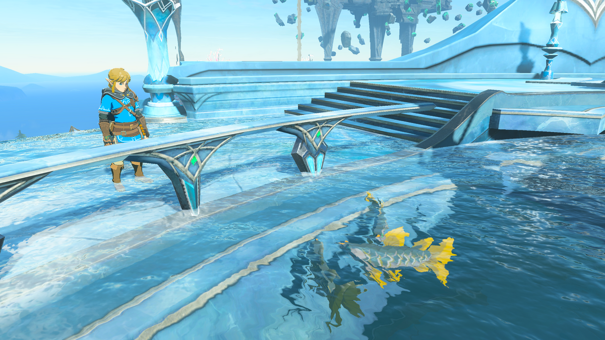
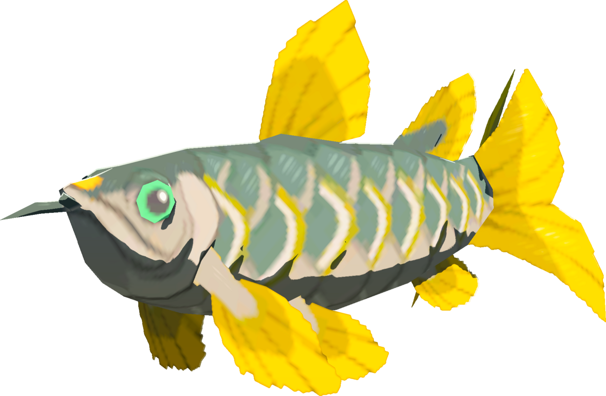
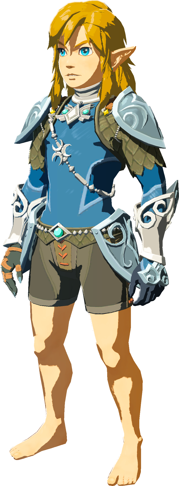

图：尝试海角的喷泉水池——古代亚罗瓦那就游在这里，跳下去按 A 就能捉到。
📑 本篇目录
先说结论：问人、捉鱼、修铠甲
石像清淤之后，去卓拉领地王座厅下方的医务室找尤娜——卓拉铠甲坏了，得修好才能逆瀑而上。先去杂货店问铁匠罗司里，他说古代亚罗瓦那在普洛米斯山米法雕像附近的水域；到尝试海角的喷泉水池里捉一条交给尤娜，她当场把铠甲修好。
| 阶段 | 要做的事 |
|---|---|
| 第一段：接任务 | 王座厅下方的医务室找尤娜，任务不会自动开始 |
| 第二段：问下落 | 杂货店问铁匠罗司里，鱼在普洛米斯山米法雕像附近的水域 |
| 第三段：捉鱼 | 去尝试海角的喷泉水池，跳进水里按 A 捉古代亚罗瓦那 |
| 第四段：修铠甲 | 把鱼交给尤娜，她当场修好卓拉铠甲 |
接取与奖励
| 项目 | 内容 |
|---|---|
| 接取 | 卓拉领地医务室，找尤娜 |
| 位置 | 卓拉领地 · 医务室、米法庭 |
| 前置 | 完成石像清淤，与尤娜对话 |
| 奖励 | 卓拉铠甲入手，可以逆瀑而上；水之神殿前置完成 |
| 后续 | 水之神殿前务必先做完这一步 |
出发前准备
| 准备 | 说明 |
|---|---|
| 不用带钓竿 | 跳进水里游近了按 A 就能捉 |
| 别把鱼吃了或卖了 | 交任务要的就是这条古代亚罗瓦那 |
| 步行就能到米法庭 | 不用先穿一件旧铠甲才能上山 |
第一步：在医务室找尤娜
1石像清淤之后，去卓拉领地王座厅下方的医务室找尤娜。
2这个任务不会自动开始，地图上也没有标记。直接去找她对话。
3她说卓拉铠甲坏了，得用古代亚罗瓦那才能修。

图：卓拉领地——尤娜在王座厅下方的医务室等你，罗司里在领地里的杂货店。
第二步：问铁匠罗司里打听鱼的下落
1去领地里的杂货店找铁匠罗司里。
2他说古代亚罗瓦那在普洛米斯山米法雕像附近的水域。
3记住：修铠甲的是尤娜，罗司里只提供鱼的下落。
第三步：去尝试海角的喷泉水池捉古代亚罗瓦那
1从领地往上走去米法庭。步行就能到，不用先穿旧铠甲。
2尝试海角的喷泉水池里游着古代亚罗瓦那。就在伊黑恩阿神庙附近，金色鱼鳍很好认。
3跳进水里游近了按 A 捉住。
4初始空岛西南瀑布底的水域也有。喷泉水池那条没捉到，可以去那儿碰碰运气。

图：古代亚罗瓦那——金色鱼鳍的老鱼，米法雕像附近的水域才有。
第四步：把鱼交给尤娜
1回医务室把古代亚罗瓦那交给尤娜。
2她当场把卓拉铠甲修好，交给你。
3穿上它就能逆瀑而上，游得也更快。水之神殿前务必先做完这一步。

图：卓拉铠甲——穿上它就能逆瀑而上，游得也更快。
捉鱼地点
| 地点 | 说明 |
|---|---|
| 尝试海角的喷泉水池 | 伊黑恩阿神庙附近，最顺路 |
| 初始空岛西南瀑布底 | 备选，喷泉水池那条没捉到可以去那儿 |
卓拉铠甲效果
| 效果 | 说明 |
|---|---|
| 逆瀑而上 | 穿着铠甲游进瀑布，按 A 往上冲 |
| 游速提升 | 游泳更快 |
| 淤泥水无效 | 被淤泥污染的水里，攀瀑不管用 |
容易翻车的地方
- 找罗司里修铠甲——修铠甲的是尤娜，罗司里只提供鱼的下落，别弄反。
- 以为要先穿一件旧铠甲才能上山——不用，步行就能到米法庭。
- 在水池边干等——得跳进水里游近了按 A 捉。
- 捉到鱼随手吃了——交任务要的就是这条鱼，别吃别卖。
- 没修铠甲就去水之神殿——攀瀑要靠这件铠甲，先做完这一步。
一句话总结
医务室找尤娜接任务，问罗司里打听下落，去尝试海角的喷泉水池捉一条古代亚罗瓦那交给她——卓拉铠甲修好了，逆瀑而上，水之神殿可以去了。